www.pythonanywhere.com and click on Start running Python online in less than a minute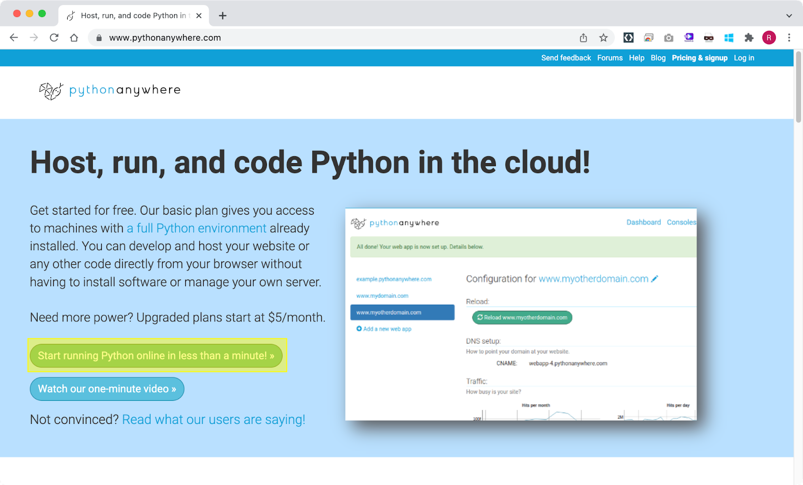
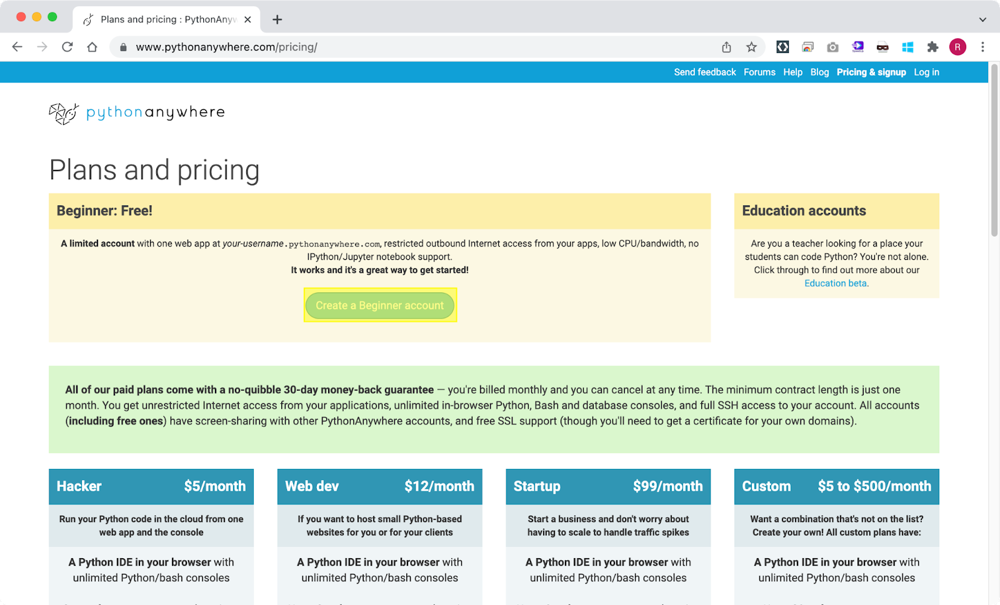
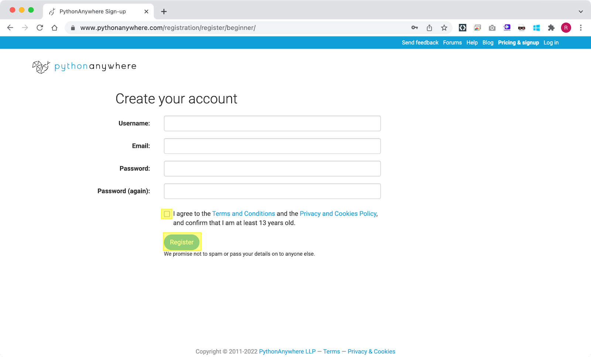
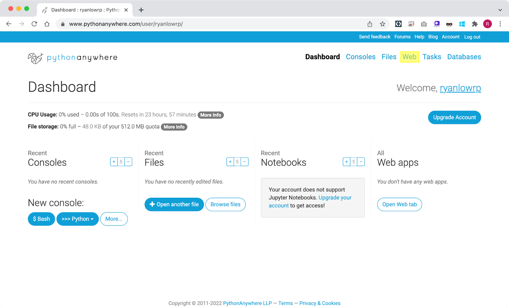
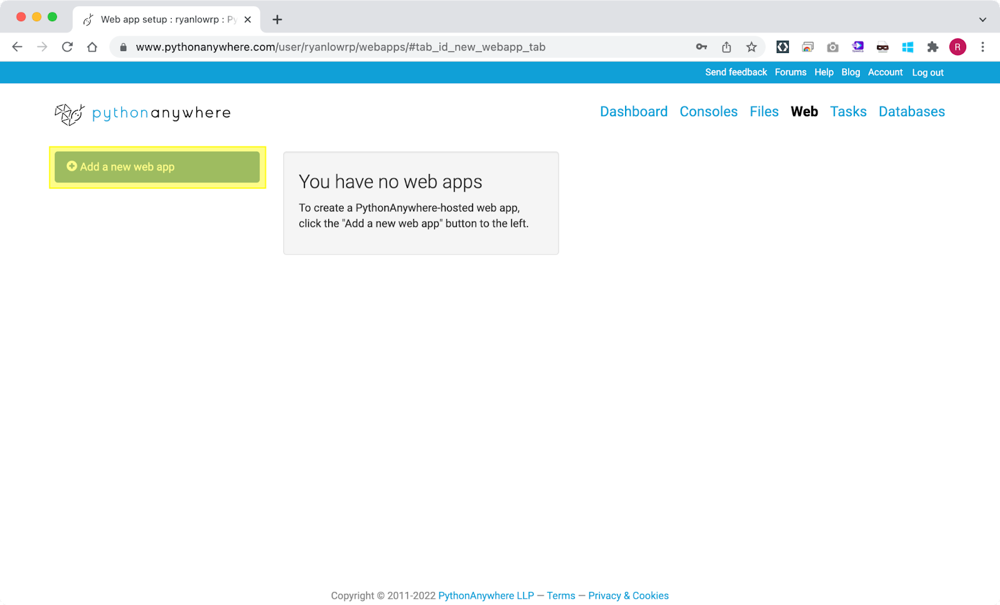
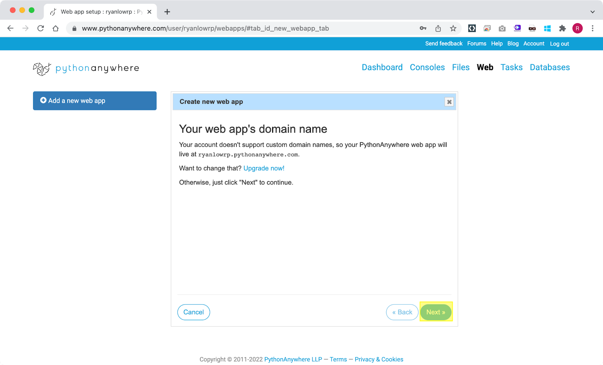
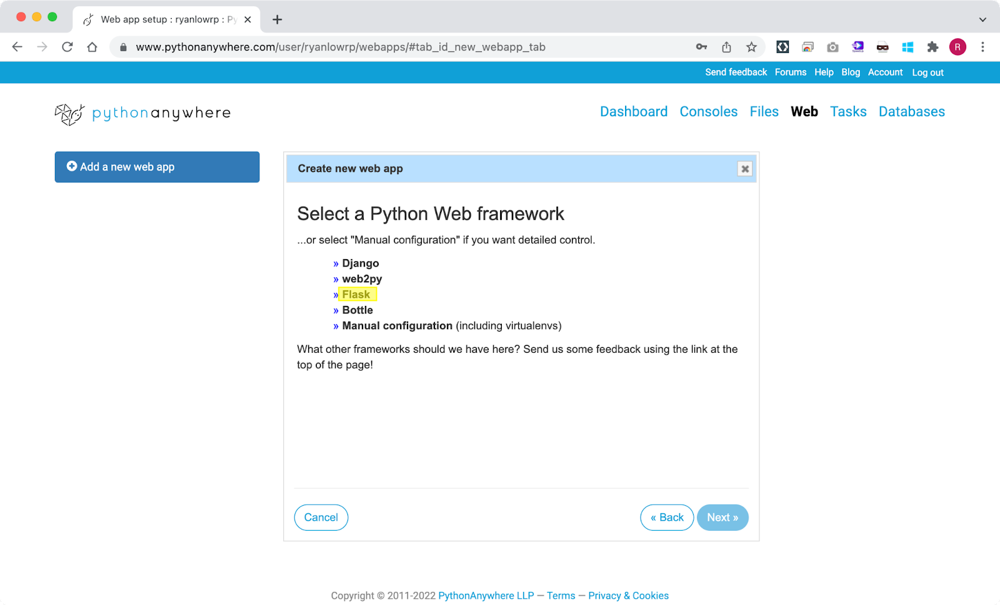
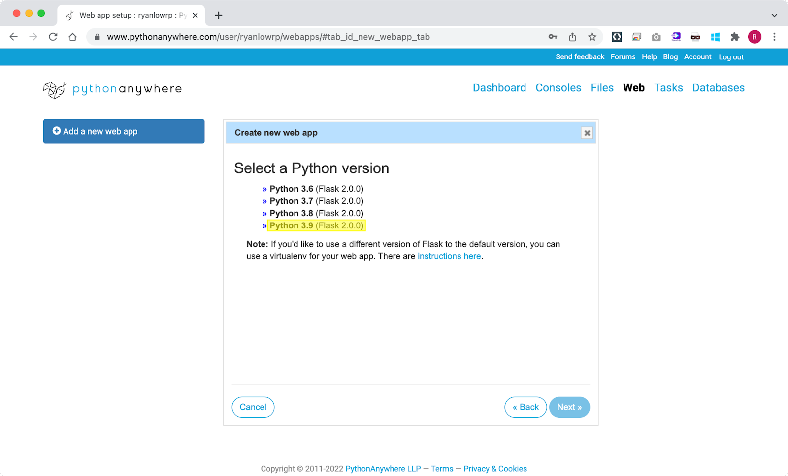
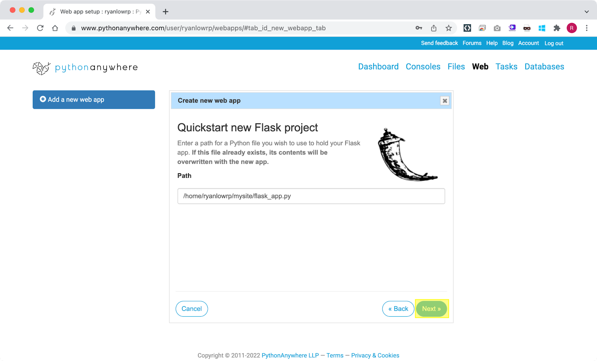
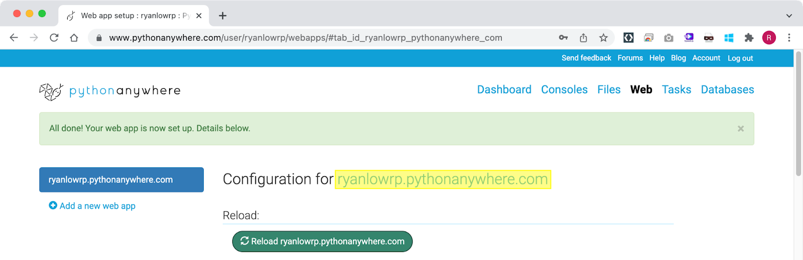
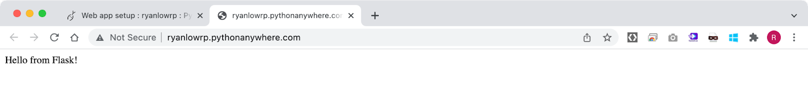
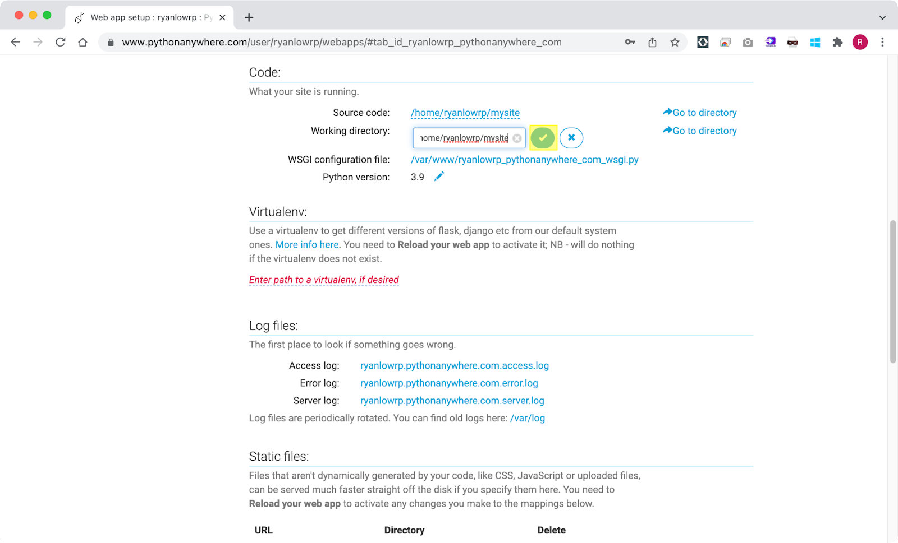
mysite directory contains the files for your web app. Click on mysite.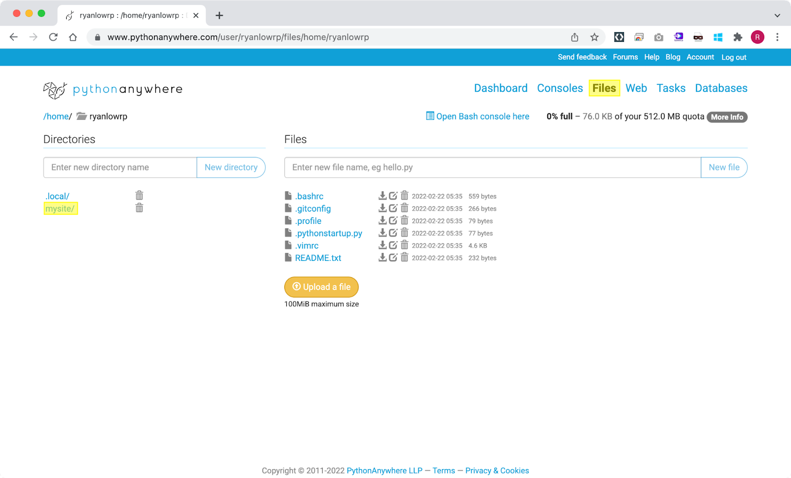
mysite folder contains a single flask_app.py file.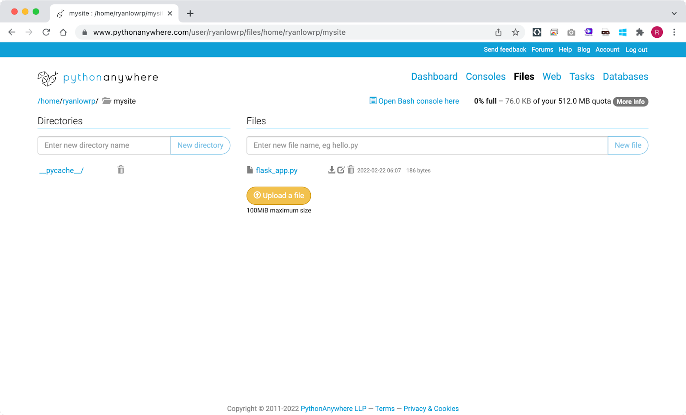